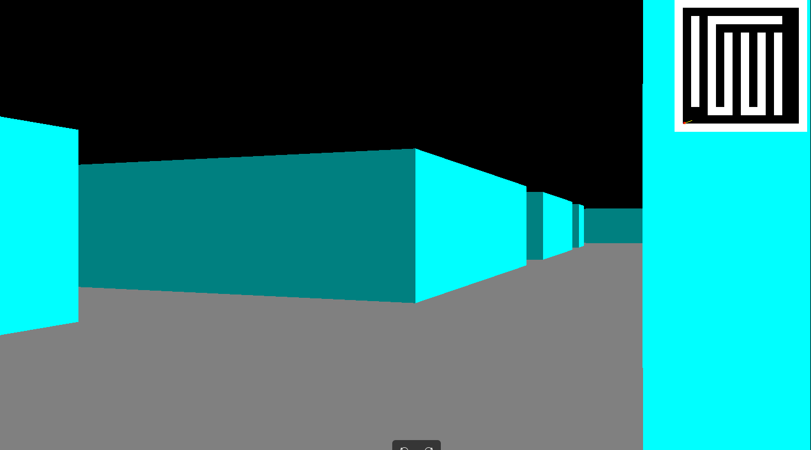
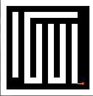
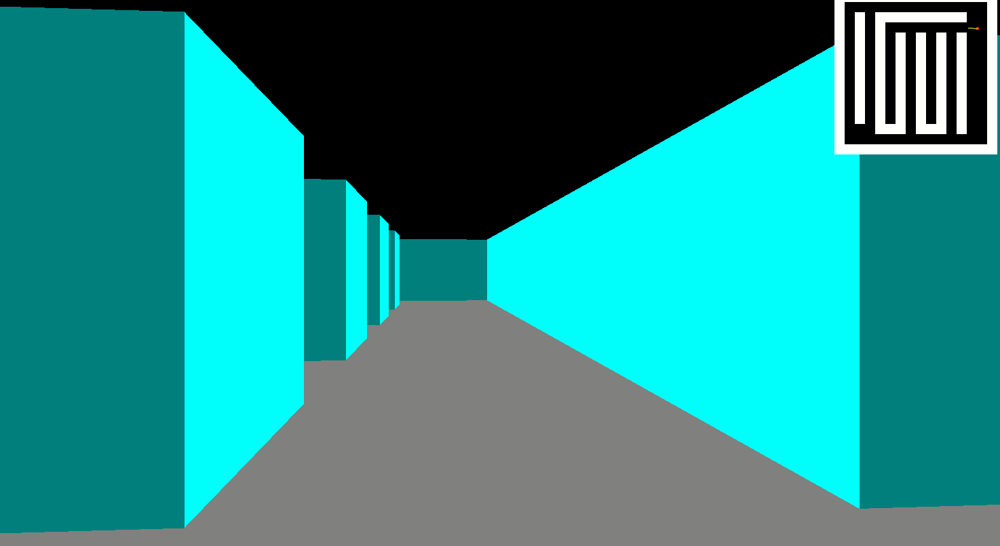
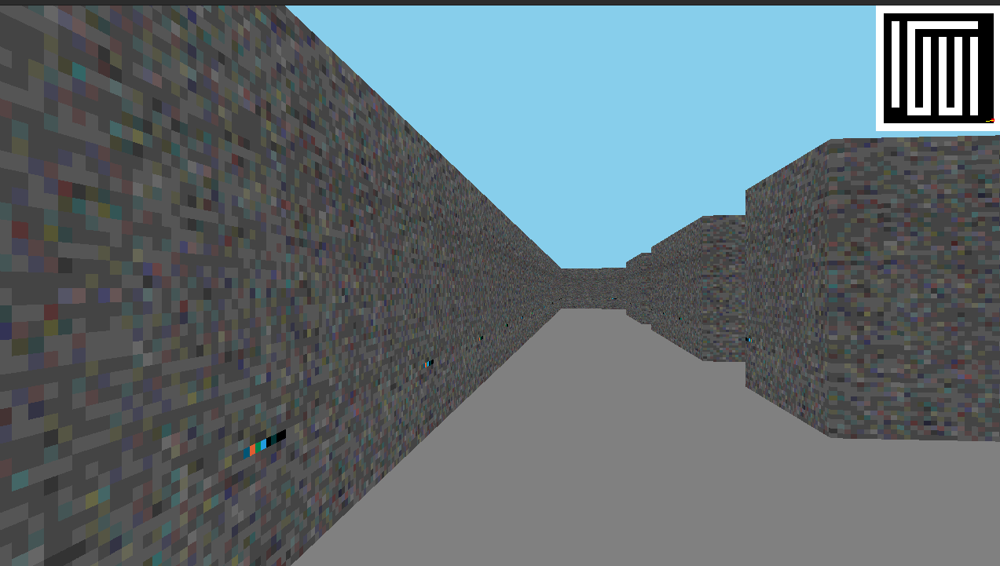

Features

Realistic Rendering
Realistic Rendering
A Stunning and Realistic 3D environment is created using raycasting techniques.

Collision Handling
Just like a person can't walk through walls in real life, the player cannot go through walls.

Mapping
A map outline of the maze is implemented that acts as a guide for the player (so the player is not completely.

Efficient Performance
Optimized algorithms ensure smooth and efficient rendering and movement even on lower-end systems.

Wall Texturing
The walls of the maze are coated with imported textures to create some illusion of realism.